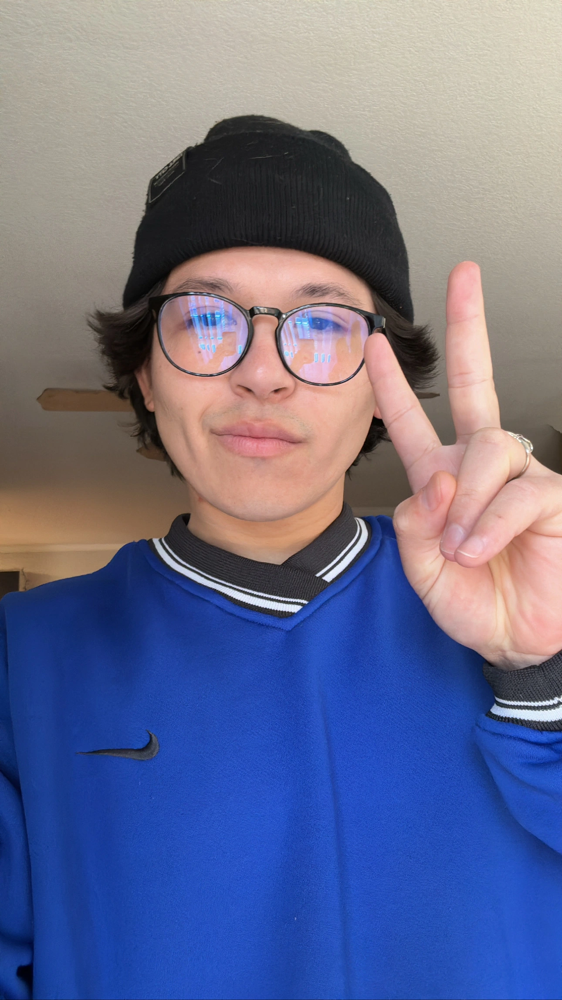

InTrust
Estate planning software for law firms — generating high-fidelity legal document packages from structured intake data.
Applied AI Technologist
I turn complex ideas into usable tools, systems, and interactive experiences — blending creativity, technology, and rapid prototyping to solve real problems.
Selected Work
2025 - 2026
Estate planning software for law firms — generating high-fidelity legal document packages from structured intake data.
A mobile-first interactive postcard concept using prompt-driven personalization to turn event identity into AI-generated visuals.
A large-format interactive gallery experience blending story, media, and motion for a foundation-facing digital museum environment.
A calm, trust-centered web presence for a Boulder therapist — built around clarity, warmth, accessibility, and local discoverability.
How I Work
My work blends creative direction, technical systems, and rapid prototyping — helping transform complex ideas into clear, functional experiences people can actually use.
Designing practical AI and automation pipelines that turn messy creative or operational needs into repeatable systems.
Building desktop and browser-based tools where control, privacy, and reliability matter.
Blending design, interaction, and engineering into cohesive digital experiences and tools.
Connecting web, NFC, QR, AR, and real-world interaction into cohesive experiences.
My Perspective
Field Note 001
New tools, models, and workflows appear constantly. The advantage is not memorizing a single platform — it’s developing the ability to adapt, experiment, and recognize where technology becomes genuinely useful.
Field Note 002
Automation, image generation, local tooling, workflows, agents, physical systems — each opens different possibilities. The challenge is understanding which approach actually fits the problem in front of you.
Field Note 003
People who can think creatively while understanding systems, tools, and technology will have an increasing ability to shape ideas into reality. The future feels most exciting when technology expands human capability instead of replacing it.

About
I’m Isaac Nino — an Applied AI Technologist and Creative Technologist based in Colorado. I build tools, workflows, and interactive experiences that help people use technology with more clarity, confidence, and intention.
My work moves across AI workflows, local-first software, immersive web experiences, automation, and physical/digital systems — always with a focus on making complex ideas feel practical and human.
I care most about the translation layer: turning technical potential into experiences that feel intuitive, useful, and grounded in real-world needs.
Capabilities
Technical Practice
Contact
I’m always interested in thoughtful projects, creative technology, AI-enabled systems, and collaborative work that bridges ideas with real execution. Whether it’s prototyping a new concept, shaping a workflow, or building something from the ground up — I enjoy helping turn ambitious ideas into usable experiences.